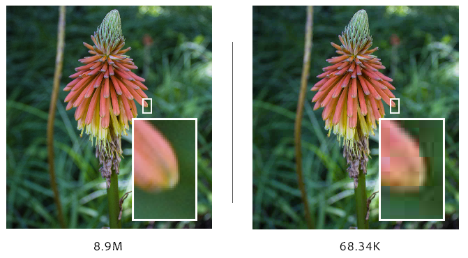

Compressies zorgen ervoor dat een bestand minder ruimte opneemt dan het in originele functie stond. Er zijn twee soorten compressies. De ene heet lossy compression, daarbij wordt de informatie van het beslag kleiner door info te verwijderen, waardoor de kwaliteit heel echt achteruit gaat. Je hebt ook de lossless compressie. Daar wordt informatie op een andere manier opgeslagen, waardoor het minder opslag inneemt. Ook blijft de kwaliteit gelijk. Bij lossless compressions kunnen er nog dingen ongedaan worden, maar dat kan bij lossy compressions niet.
Bij foto’s en video’s wordt vooral de lossy compression gebruikt. De compressie verandert de kleurtinten op een manier dat het niet waarneembaar is met het oog, maar dat het wel veel minder ruimte opneemt op je apparaat. Dit zorgt er wel voor dat de kwaliteit van de afbeelding een beetje achteruit gaat. Smartphones passen vaak uit zichzelf de lossy compression toe, wanneer er een foto of video wordt opgeslagen.
Net als bij foto’s en video’s wordt er bij geluid vooral de lossy compression toegepast. De MP3 methode is daar heel geschikt in. De MP3 methode houdt in dat er tonen boven 16 kHz worden weggelaten. Het menselijk oor kan ongeveer 20 kHz horen, maar des te ouder men is des te lager die waarde wordt. Vandaar dat het verschil nauwelijks te merken is. Professionele muziek heeft een bitrate van 1411,2 kbps, de bitrate kan je tot 256 kbps terugbrengen zonder dat het verschil hoorbaar is.